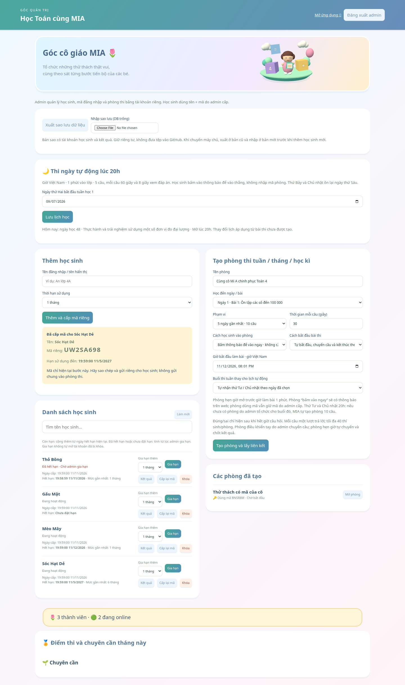
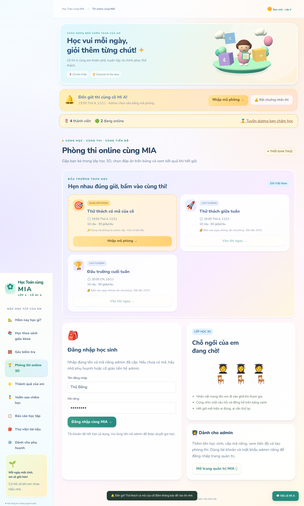
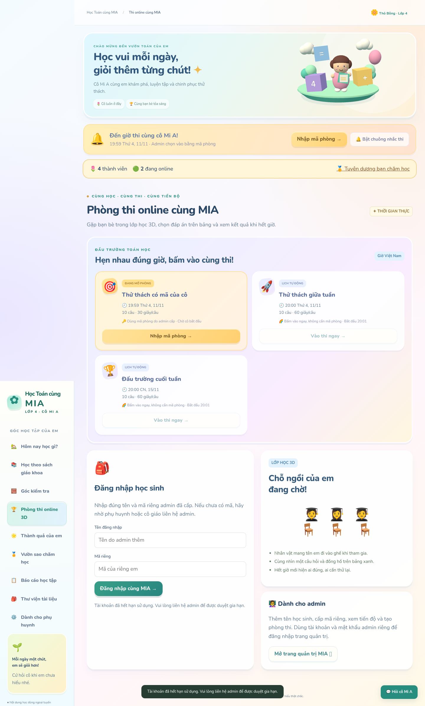
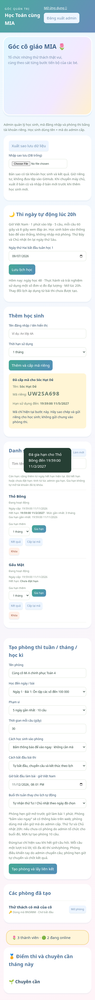

Cấp hạn và gia hạn tài khoản
Tài khoản và mã trong ảnh là dữ liệu minh họa dùng thử, không phải tài khoản học sinh thật.
Mở trang admin →
Chọn hạn khi cấp mã, xem ngày cấp và ngày hết hạn

Tài khoản hết hạn

Phiên đang dùng cũng bị chặn khi hết hạn

Gia hạn trên điện thoại
